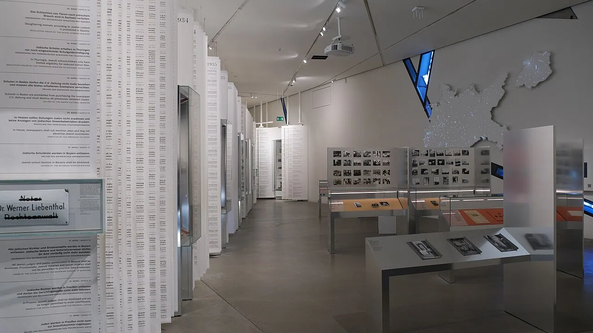
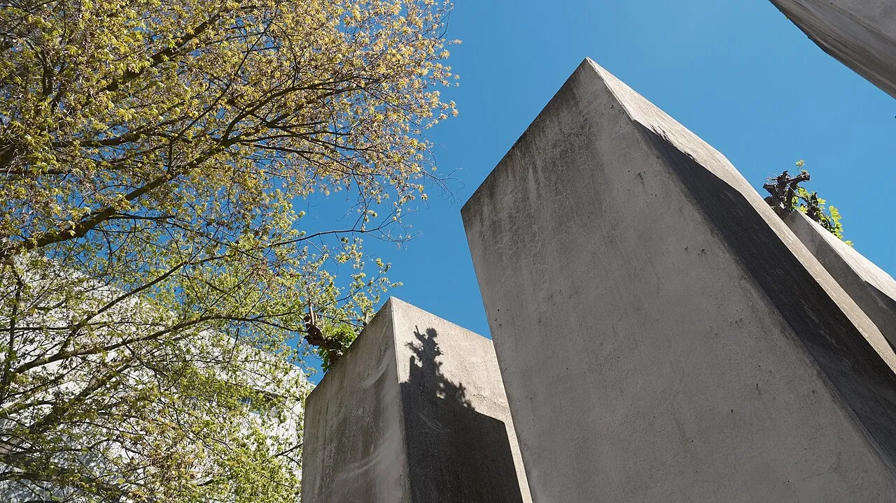
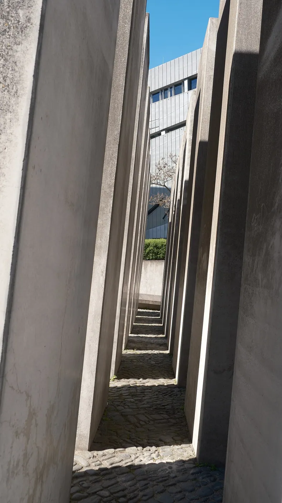
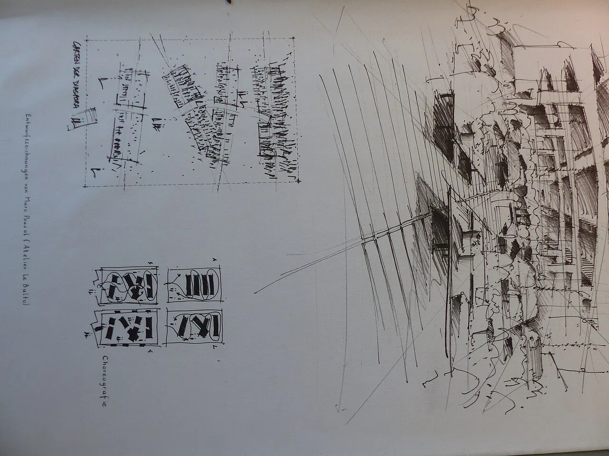

1/10 · ExteriorPhoto: Ziko van Dijk · CC BY-SA 4.0 · source2/10 · ExteriorPhoto: Ziko van Dijk · CC BY-SA 4.0 · source3/10 · InteriorPhoto: Ziko van Dijk · CC BY-SA 4.0 · source4/10 · InteriorPhoto: Ziko van Dijk · CC BY-SA 4.0 · source

5/10 · InteriorPhoto: Ziko van Dijk · CC BY-SA 4.0 · source6/10 · DetailPhoto: Ziko van Dijk · CC BY-SA 4.0 · source

7/10 · ContextPhoto: Ziko van Dijk · CC BY-SA 4.0 · source

8/10 · ContextPhoto: Ziko van Dijk · CC BY-SA 4.0 · source9/10 · Model · Model of Jüdisches Museum Berlin (Jewish Museum Berlin) by Daniel LibeskindPhoto: Naotake Murayama · CC BY 2.0 · source

Photos unavailable10/10Moleskine · CC BY 4.0 · source
The Jewish Museum Berlin (Jüdisches Museum Berlin) was opened in 2001 and is the largest Jewish museum in Europe. On 3,500 square metres (38,000 square feet) of floor space, the museum presents the history of the Jews in Germany from the Middle Ages to the present day, with new focuses and new scenography. It consists of three buildings, two of which are new additions specifically built for the museum by architect Daniel Libeskind. German-Jewish history is documented in the collections, the library and the archive, and is reflected in the museum's program of events.
The Jewish Museum Berlin is located in what was West Berlin before the fall of the Wall. Essentially, it consists of two buildings – a baroque old building, the "Kollegienhaus" (that formerly housed the Berlin Museum) and a new, deconstructivist-style building by Libeskind. The two buildings have no visible connection above ground. The Libeskind building, consisting of about 15,000 m2 (160,000 sq ft), is a twisted zig-zag and is accessible only via an underground passage from the old building.